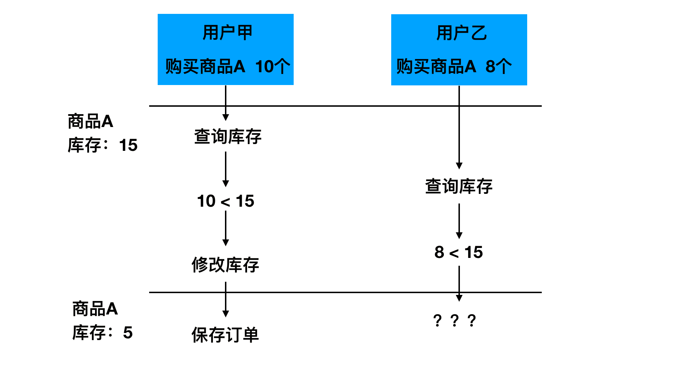
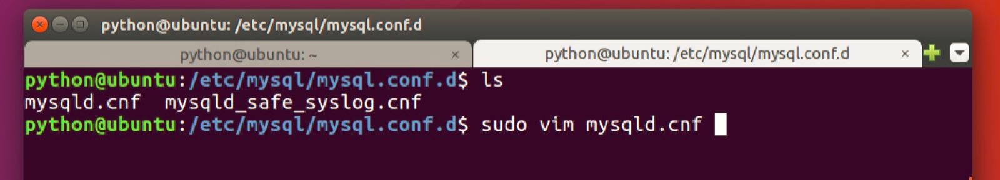
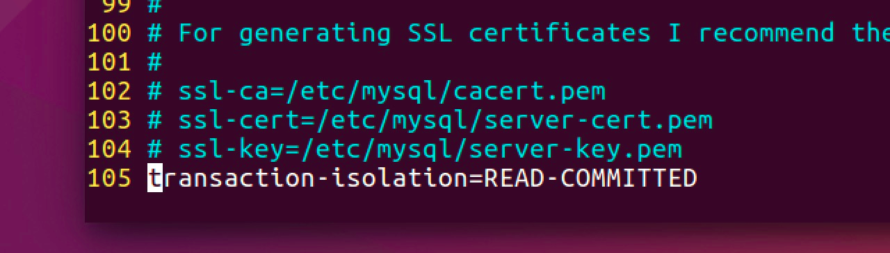

并发处理
在多个用户同时发起对同一个商品的下单请求时，先查询商品库存，再修改商品库存，会出现资源竞争问题，导致库存的最终结果出现异常。

解决办法：
悲观锁
当查询某条记录时，即让数据库为该记录加锁，锁住记录后别人无法操作，使用类似如下语法
select stock from tb_sku where id=1 for update; SKU.objects.select_for_update().get(id=1)
悲观锁类似于我们在多线程资源竞争时添加的互斥锁，容易出现死锁现象，采用不多。
乐观锁
乐观锁并不是真实存在的锁，而是在更新的时候判断此时的库存是否是之前查询出的库存，如果相同，表示没人修改，可以更新库存，否则表示别人抢过资源，不再执行库存更新。类似如下操作
update tb_sku set stock=2 where id=1 and stock=7; SKU.objects.filter(id=1, stock=7).update(stock=2)任务队列
将下单的逻辑放到任务队列中（如celery），将并行转为串行，所有人排队下单。比如开启只有一个进程的Celery，一个订单一个订单的处理。
使用乐观锁改写下单逻辑
def create(self, validated_data):
"""保存订单"""
#获取当前下单用户
user = self.context['request'].user
# 生成订单编号
# 保存订单的基本信息数据 OrderInfo
# 创建订单编号
# 20180523160505+ user_id 100
# timezone.now() -> datetime
order_id = timezone.now().strftime('%Y%m%d%H%M%S') + ('%09d'%user.id)
# 保存订单基本信息数据 OrderInfo
address = validated_data['address']
pay_method = validated_data['pay_method']
with transaction.atomic():
#创建一个保存点
save_id = transaction.savepoint()
try:
order = OrderInfo.objects.create(
order_id=order_id,
user=user,
address=address,
total_count=0,
total_amount=Decimal('0'),
freight=Decimal('10.0'),
pay_method=pay_method,
status=OrderInfo.ORDER_STATUS_ENUM['UNSEND'] if pay_method == OrderInfo.PAY_METHODS_ENUM['CASH'] else
OrderInfo.ORDER_STATUS_ENUM['UNPAID']
)
# 从redis中获取购物车结算商品数据
redis_conn = get_redis_connection('cart')
cart_redis = redis_conn.hgetall('cart_%s' % user.id)
cart_selected = redis_conn.smembers('cart_selected_%s' % user.id)
# 遍历结算商品：
cart = {}
for sku_id in cart_selected:
cart[int(sku_id)] = int(cart_redis[sku_id])
sku_id_list = cart.keys()
for sku_id in sku_id_list:
# 出现对于同一个商品的争抢下单时，如失败，再次尝试，直到库存不足
while True:
sku = SKU.objects.get(pk=sku_id)
# 判断商品库存是否充足
count = cart[sku.id]
if sku.stock < count:
transaction.savepoint_rollback(save_id)
raise serializers.ValidationError('库存不足')
print(sku.stock)
import time
time.sleep(5)
# 减少商品库存，增加商品销量
# sku.stock -= count
# sku.sales += count
# sku.save()
origin_stock = sku.stock
origin_sales = sku.sales
new_stock = origin_stock - count
new_sales = origin_sales + count
#返回受影响的行数
ret = SKU.objects.filter(id=sku.id,stock=origin_stock).update(stock=new_stock,sales=new_sales)
if ret == 0:
continue
# 保存订单商品数据
order.total_count += count
order.total_amount += (sku.price * count)
OrderGoods.objects.create(
order=order,
sku=sku,
count=count,
price=sku.price
)
#记得 break
break
order.save()
except ValueError:
raise
except Exception as e:
transaction.savepoint_rollback(save_id)
raise serializers.ValidationError('下单失败')
#提交失误
transaction.savepoint_commit(save_id)
# 清除购物车中已经结算的商品
pl = redis_conn.pipeline()
pl.hdel('cart_%s' % user.id, *cart_selected)
pl.srem('cart_selected_%s' % user.id, *cart_selected)
pl.execute()
return order
需要修改MySQL的事务隔离级别
事务隔离级别指的是在处理同一个数据的多个事务中，一个事务修改数据后，其他事务何时能看到修改后的结果。
MySQL数据库事务隔离级别主要有四种：
- Serializable 串行化，一个事务一个事务的执行
- Repeatable read 可重复读，无论其他事务是否修改并提交了数据，在这个事务中看到的数据值始终不受其他事务影响
- Read committed 读取已提交，其他事务提交了对数据的修改后，本事务就能读取到修改后的数据值
- Read uncommitted 读取为提交，其他事务只要修改了数据，即使未提交，本事务也能看到修改后的数据值。
MySQL数据库默认使用可重复读（ Repeatable read），而使用乐观锁的时候，如果一个事务修改了库存并提交了事务，那其他的事务应该可以读取到修改后的数据值，所以不能使用可重复读的隔离级别，应该修改为读取已提交Read committed。
修改方法：
sudo vim /etc/mysql/mysql.conf.d/mysqld.cnf
修改完成之后重启
sudo service mysql restart

transaction-isolation=READ-COMMITTED
